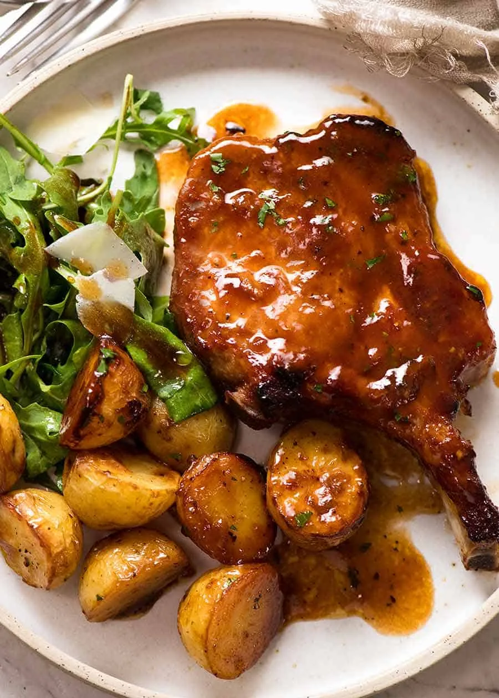

PorkChop Recipe

Ingredients
- Pork Chops
- Flour
- Spice Mix
- Oil
- Optional: Pan Sauce
How to put it all together.
-
Season and bring to room temperature: Take the pork chops out of the refrigerator and season both sides with salt (a little less than 1/4 teaspoon per chop).
Let them rest at room temperature for 30 minutes.
-
Make spice rub: Meanwhile, in a small bowl, mix the flour, chili powder, garlic powder, onion powder, smoked paprika, and 1/2 teaspoon of black pepper
-
Add spice rub: After 30 minutes, pat the chops dry with paper towels, then rub the spice mixture all over.
-
Cook the pork chops: Heat the oil in a skillet (with a lid) over medium-high heat. When the oil is hot and looks shimmery, add the pork. Cook until golden, 2 to 3 minutes.
-
Flip the pork so that the seared side is facing up. If the chops have a fat edge, use tongs to hold them upright until the fat sizzles and browns, about 30 seconds.
-
Reduce the heat to low, then cover the skillet. Cook for 6 to 12 minutes, or until an instant-read thermometer inserted into the thickest part of the chop reads 145°F.
Cooking time depends on thickness, so start checking for doneness at 5 minutes, then every 2 minutes after.
If you do not have a thermometer, pork chops are done when, when cut into, the juices run clear.
-
Let them rest: Transfer the pork chops to a plate, then loosely cover them with aluminum foil. Let the pork rest for 5 minutes.
-
Make pan sauce: While the pork rests, make the pan sauce right in the same skillet. Increase the heat to medium-high, then add the chicken stock, vinegar, and honey.
Bring the sauce to a simmer and cook until reduced by half. As it simmers, use a wooden spoon to scrape the bottom of the pan so that any stuck bits of pork come up.
Taste, then adjust with additional salt, vinegar, or honey.
-
Add the butter: Slide the skillet off the heat, wait until the sauce stops simmering, then swirl in the butter.
-
Serve: Return the pork chops to the pan and spoon the sauce over them. Or slice the chops and toss the slices in the sauce. Sprinkle with fresh parsley and serve.